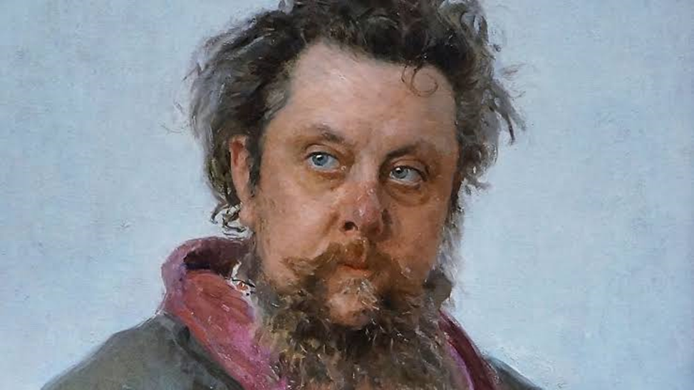
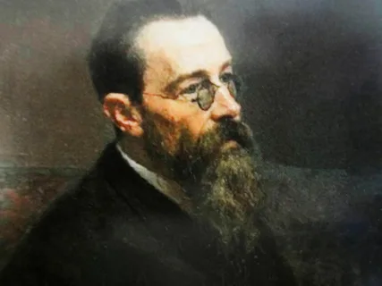
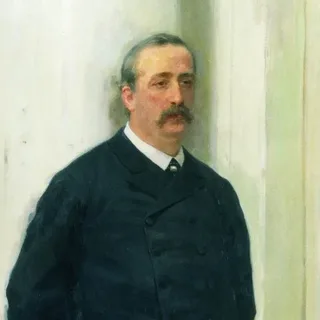
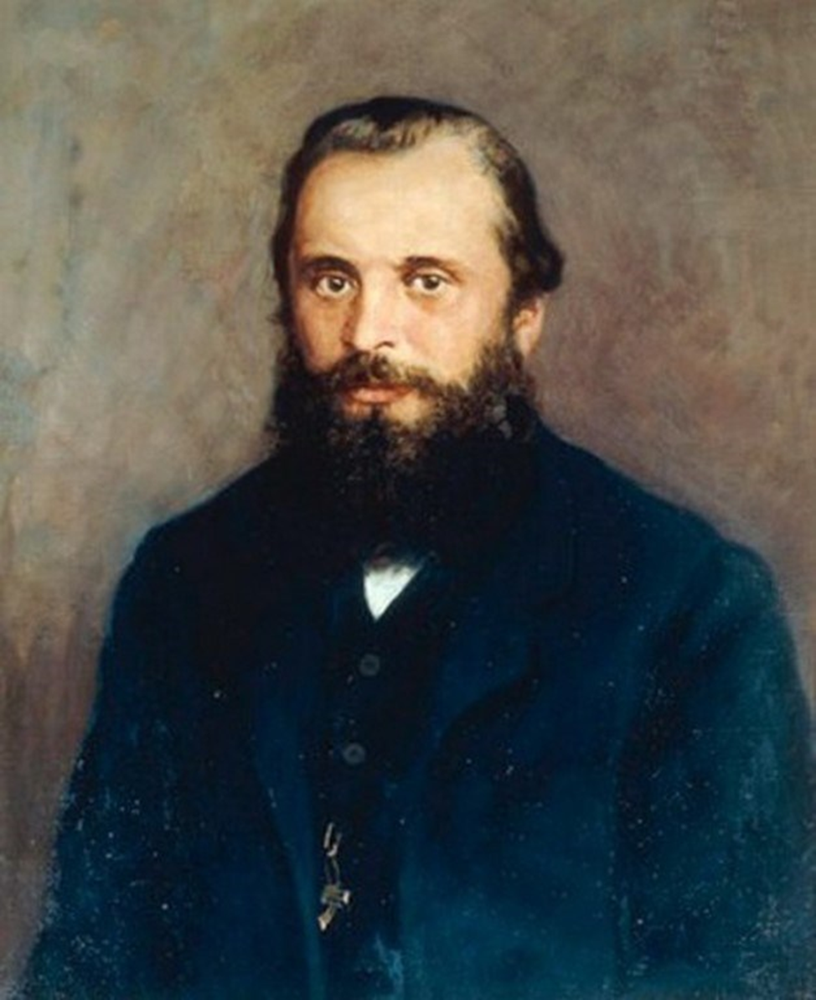
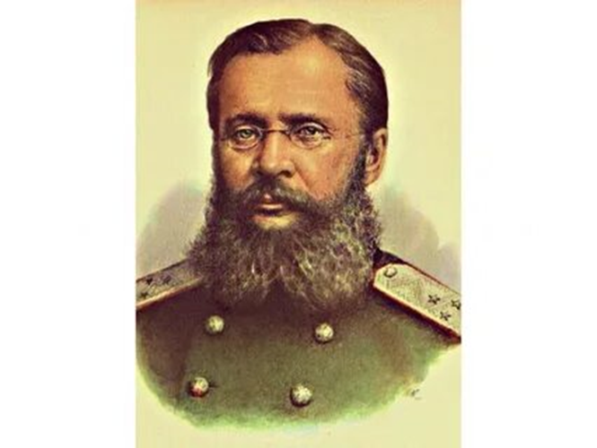

М.П.Мусоргский

- Композитор имел потрясающую музыкальную память. Он мог запомнить
сложные музыкальные произведения и тут же их воспроизвести.
- Мусоргский никогда не делал черновиков или набросков. Вместо этого он подолгу думал над каждым произведением, до тех пор,
пока у него в голове не формировался его окончательный образ, после чего писал его целиком.
- Единственный прижизненный портрет Мусоргского был написан его другом, художником Репиным,
прямо в больнице, где прошли последние дни композитора.
- Мусоргский — любимый композитор Фёдора Шаляпина. Он же являлся исполнителем главной роли в операх «Борис Годунов» и «Хованщина».
- В 33 российских населённых пунктах есть улицы имени Мусоргского. Также его фамилию носят музыкальные школы, училища и консерватория.
- В 13-летнем возрасте Мусоргский написал свое первое произведение – фортепианную польку «Подпрапорщик», которая затем была опубликована в одном петербургском
издательстве.
Н.А.Римский-Корсаков

- Способности к музыке проявились у Римского-Корсакова очень рано — уже в возрасте трёх лет он попадал в ноты, играя на барабане.
- В детстве Римский-Корсаков ненавидел уроки музыки, мечтая о морской службе.
- Он окончил военно-морское училище, но во время пребывания в Петербурге познакомился с искусством и окончательно увлёкся музыкой.
- Во время службы на флоте Римский-Корсаков три года провёл в плаваниях, посетив множество стран.
- Консерватория Санкт-Петербурга пригласила его на должность преподавателя музыки, хотя он даже не имел музыкального образования.
- У Римского-Корсакова было семеро детей.
- Любимой темой композитора были сказки. Известность ему принесли «Сказка о царе Салтане», «Золотой петушок» и «Кащей Бессмертный».
- Музыку Римский-Корсаков соотносил с цветами. К примеру, ми-мажор, в котором написаны всего его «морские» произведения, он «видел» синим.
- Когда опера «Золотой петушок» была запрещена из-за того, что в ней высмеивался образ царя, с композитором случился инфаркт.
- После революции квартиру Римского-Корсакова сделали коммунальной, поселив в ней десять семей.
- Современная Санкт-Петербургская консерватория носит имя Римского-Корсакова.
А.П.Бородин

- Композитор был незаконнорожденным ребенком грузинского князя.
- В 9 лет Бородин написал своё первое музыкальное произведение, а в 10 — проявил большой интерес к химии.
- После обучения в академии Бородин устроился работать врачом в госпиталь,
а также стал ассистентом Зинина. В 1858 году успешно защитил диссертацию по химии и медицине.
- Над оперой «Князь Игорь» композитор работал 19 лет.
- Бородин основал Высшие женские врачебные курсы, чтобы женщины тоже получили возможность учиться и получать высшее образование.
- Умер композитор внезапно, от сердечного приступа, во время костюмированной вечеринки по случаю масленицы.
- В 1918 году именем Бородина назвали речной грузопассажирский пароход.
М.А.Балакирев

- Балакирев был ярым противником консерваторий, считая, что талант взращивается только в домашних условиях.
- Летние месяцы композитор проводил в Гатчине — отдаленном пригороде Санкт-Петербурга.
- После кончины императора Александра III в 1894 году Балакирев подал в отставку с поста руководителя Придворной капеллы.
- Композитор много изучал народное творчество, собирая неизвестные песни в поездках по поволжским деревням и селениям
кавказских народностей — грузин, армян, чеченцев.
- Балакирев всю жизнь был весьма небогатым человеком. Поправить свое материальное положение он смог только в годы службы в капелле.
Ц.А.Кюи

- Автор десятков трудов по фортификации. Они оставались актуальными на протяжении десятилетий после написания.
- За свою жизнь Кюи сочинил огромное количество музыки: 18 опер (из них 4 предназначались для детской аудитории),
более 250 романсов, ряд других произведений для оркестра, хора, вокальных и инструментальных ансамблей.
- Имел французско-литовское происхождение. Уже в раннем детстве Цезарь Антонович свободно владел четырьмя языками
— французским, польским, литовским и русским.
- Закончил две чужих оперы. Над одной из них ранее работал Даргомыжский, а над другой — Мусоргский. В обоих случаях ему доверили
завершение не доведённой до конца работы в связи с уходом из жизни оригинальных авторов.
- Написал книгу «Музыка в России», которая является первым литературным произведением о музыкальных произведениях
отечественных композиторов.
- Несмотря на значительные успехи в области музыки, Кюи не оставлял и государственную службу. Он преподавал в Петербургском инженерном училище,
где, в числе прочего, читал и курс по фортификации, написанный лично им.
- Когда началась русско-турецкая война, Цезарь Антонович оставил инженерную академию и отправился к Константинополю,
где лично руководил укреплением позиций русской армии.
После того, как Османская империя вышла из войны, Кюи вернулся обратно в Петербург, снова занявшись музыкальной деятельностью.